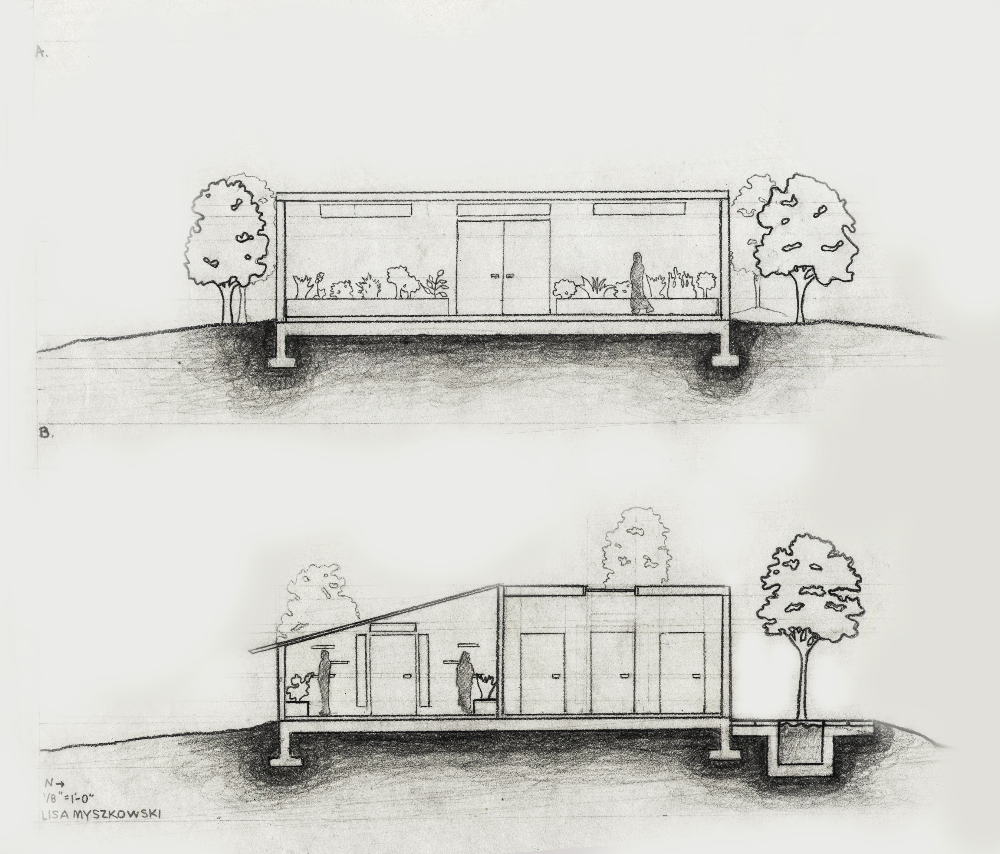
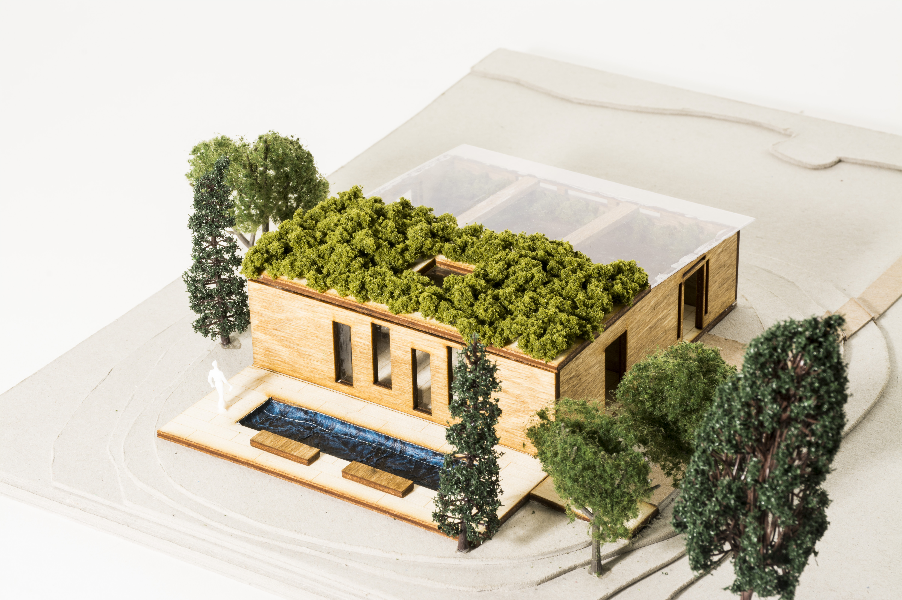

<doctype html>
<html lang="en">
<head>
<title>Lisa Myszkowski</title>

<!-- <script type="text/javascript" src="http://ajax.googleapis.com/ajax/libs/jquery/1.5/jquery.min.js"></script>
<script type="text/javascript" src="http://malsup.github.com/jquery.cycle.all.js"></script>
<script type="text/javascript" src="http://malsup.github.com/jquery.easing.1.3.js"></script-->

<script type="text/javascript">
$(function() {
    $('#s4').before('<div id="nav">').cycle({
            speed:  'slow',
            timeout: 4000,
            pager:  ''
        });
});

</script>

</head>
<body>

<div id="s4" class="pics">
  
  
  
  
  
</div>


</body>
</html
